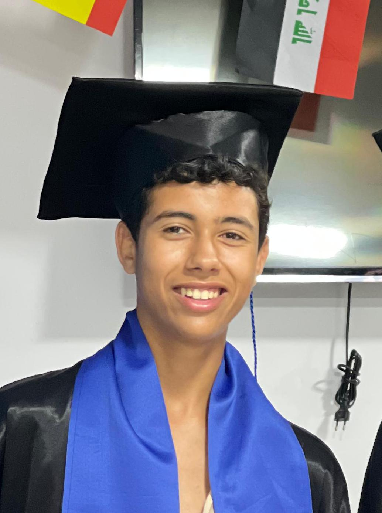

16 yrs old from Morocco-al houssiema
I'm Zakariae Attaf, a passionate graphic designer and high school student with a strong drive for
innovation and creativity. I have a deep interest in cybersecurity and programming, constantly
exploring how technology shapes the digital world and looking for ways to sharpen my technical skills in both fields
. Beyond the technical side, I bring strong interpersonal abilities to the table —
excellent communication skills and a keen awareness of body language that help me connect with people,
collaborate effectively, and present ideas with confidence. My experience in volunteering and scouting has further shaped who I am,
teaching me leadership, teamwork, discipline, and a genuine sense of responsibility toward my community. Combining creativity,
technical curiosity, and strong soft skills, I'm always eager to take on new challenges
and grow both personally and professionally.
Graphic Design
Since 2023, I've been working as a graphic designer,
honing my craft and building a professional edge in the field.
Programming / Cyber Security
Currently pursuing knowledge in programming and cybersecurity,
with a focus on developing secure and efficient solutions.
Communication
Strong interpersonal skills and a keen awareness of body language that help me connect with people,
collaborate effectively, and present ideas with confidence.
French
Fluent in French, with a strong command of the language
in both written and spoken forms.
English
Proficient in English, with excellent communication skills
and a good command of the language.